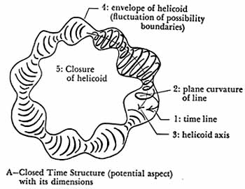
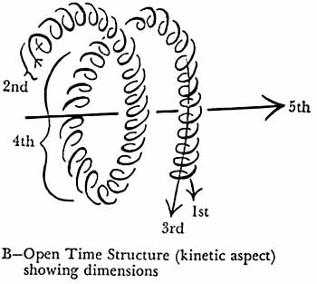

|
Foreword
Resuming the discussion of
dimensionality in terms of the topology of time, several dimension-like aspects
of
time emerge. Now the transitional zeroth dimension of
time - the time point - may be partially represented as the third dimension of
space, for every event-point has some momentary solid state and configuration as
its physical content. The change of these 3-dimensional tableaux re- sults in
occurrence. Thus the first dimension of time may be likewise partially
represented as a fourth dimension of space, whereby the juice enters the orange
without pass- ing through the skin by the simple expedient of its having previously
entered through the stem before the rind sealed itself off at the stem in
ripening. The interoperation of negative and positive time axes explains such
phenomena.
The time-point is an instantaneous stage of an event - a 3-D
tableau, the continuing occurrence of such point-events or changes forming a
time line, curved or rotated into the second time dimension28
by recurrence.
28. This second
temporal dimension is that of quantic or recurrent energy release. what we have
before termed scope, the Y-axis of note 24; while the first temporal dimension
refers to the X-axis.
lviii
This curvature is not simply closed (since there is never exact recurrence), but evoluted in a helicoidal skew-curve, constituting the third temporal dimension: development. Beyond this lies the envelope or carrier-wave of the de-
velopment-helicoid, i.e. the fluctuating or pulsating pat-
tern of possibility or ultimate, limiting cause which con-
trols development.
Finally and fifthly we have consummation, re-entry, or
integration - the achieving of a unified relationship at every moment to all the past by exhibiting all past occur-
rences as part of a single closed form and structure in this highest dimension of time, consummation, which is an ever re-creating ending, exhibiting the full implications of the beginning in now explicit form.
Such a continuous integration of all experienced phenomena is the primary function of consciousness through its various operational phases of perception, conception, memory, relation,
emotion, volition and
judgment.29 Such integration thus leads to decision,
creating another time-point; and the temporal dimensional cycle re-commences.
There are two principal ways to
display a 5-dimensional structure of time by means of 3-dimensional representations, as shown below.
Figure A
represents a Closed-System model, referring intrinsically to the
iniation-consummation of a particular development. Figure B depicts an Open-System model, referring to the pattern of the functional structure itself, without special relation to a particular development from any epoch-event.
Summing up this reckoning, there are eight world
dimensions in all, three of space and five of time.
29. The
omission of this central fact of the integrating character of consciousness constitutes the
cancer-like reductive fallacy of David Hume's thinking and of those who adopted
it either in original or revamped form.
lix

 lx
The dual nature of the fifth temporal dimension,
as
shown in its closed and open aspects, conforms, as we should expect, to the
recursion (back to the time-point) of the temporal dimensional sequence as
mentioned in the course of the preceding paragraph. There is an oscillation in
the very nature of the successive temporal dimensions, expressible in
approximate fashion by the terms 'growth' and 'form.' Occurrence, the first
dimension, is clearly growth-predominant, while the second temporal dimension,
recurrence, expresses through occurrence, and is pattern- or form-dominant.
Listing them we have
1. Occurrence -
growth (+)
2. Recurrence -
form (-)
3. Development -
growth (+)
4. Possibility - form (-)
|
growth (open structure) |
|
| 5. Consummation
- { |
|
}(±) |
|
form (closed structure) |
|
We note that the most ultimate finality found
(the fifth temporal dimension) is neither a beginning nor an ending, but both.
At the head of the above list we can place the time-point of eventuation, or the
zeroth temporal dimension, which shares the dynamically neutral and dual nature
of the fifth as the seed of both growth- and form-dominant time-extensions, and
contains their common potentiality.
Thus: 0. Initiating force (growth), Decision (form) [±].
Turning to a neighboring aspect of this discussion, the
phenomena of resonance have been more thoroughly investigated than the nature of
standing waves, though the two are intimately connected. Indeed, standing waves
and
all other resonance phenomena relate to rotation of some
lxi
sort.30
And as we have seen, all periodicity has a
chrono- topological significance and application. Specifically (now referring to the negative axis of the second of the three minimally required variables for the explicit analysis of
time waves31), potential energy must be referred prima- rily to standing waves, and kinetic energy primarily to
non-standing waves.
Such a view harmonizes with the proven quantized nature of fundamental energies, and also sheds light on the nature of the quantum, unifying it with more familiar phenomena by the aid of the time-wave conception.
In fact, this
conception tells us more, for it requires that every quantum be surrounded by a wave-field, as are electrons.
The quantized appearance of energy is necessitated by the wave-nature of time.
The waves of time breaking on the beach of occurrence, so to speak, in releasing their energy create the effect of discrete particles or quanta of
energy, while actually the source of the continuity of the phenomena lies in the wave itself.
The celebrated wave-
particle paradox of the nature of energy remains a
para- dox only so long as the chronotopological phases of the
phenomena are left unrealized in the analysis.
In fact all paradoxes are not so much brilliant or pro-
found as they are simply symptomatic of the presence of reductive or omissive thinking at some point.
If the con-
30. Standing waves may be non-arbitrarily measured by closed curves or
cycles. while the building up of increased amplitudes by resonance is
measured by some evolving spiral. typically some functional form of keθ.
Similarly, interference or damping phenomena are measured by involving or whirlpool spirals.
31. See note 24.
lxii
ception of the phenomenon is accurate and clear
enough, and the understanding of it full and deep enough, appar-
ent paradoxes will disappear, except in those regions where understanding is not
adequate and problems still remain. Paradoxes and dilemmas are to be
preferred to even more arbitrarily reductive distortions, but they are by no
means to be mistaken for final solutions or for the whole truth of their
universes of discourse. The reductive mind overlooks the return track of
the railroad and then glories in the "insoluble paradox" that the
trains must run both ways on the same track. Until we cease desiring love
affairs with paradoxes we shall never know the grace of truth, which follows
only upon the unremittingly vigilant determination to omit nothing that exists
from the framework of our conceptions, no matter how awkward that may be for our
preconceptions. For there is always a lot more that exists than what we
are aware of at any given moment. We can ill afford to forget that
fact; because if intellectual humility is thus lost, accuracy and logic
are at the same moment jeopardized, and the probability of finding correct
answers drastically reduced or nullified.
Concluding the present discussion of potential energy
and its direct bearing on chronotopology, we must realize that the usual
statement, F = ma, does not define force, but represents only a
meter-reading for force under certain conditions. Thus the forces acting
within a beam under stress are not taken into account by the ordinary appli-
cation of that equation. Again, a man holding up a roof from falling down
will expend energy and become tired,
lxiii
even though neither he nor the roof move. His
continu- ance of the standing waves of neuro-chemical energization of his muscle
fibres causes him to become fatigued. Energy is thus expended even if only
sub-observational standing waves are involved, making the phenomenon non-kinetic
when macroscopically observed; and potential energy ap-
parently requires for its maintenance the expenditure of kinetic energy at a
more microscopic level of observation.
Potential energy would thus be directly connected with increase of entropy - and
hence with the movement of time - within a given region.32
A time factor as well as a distance factor must
enter
the picture, in combination with force, as a measure of energy. Now since
by the usual definitions
Ft
= mv
we see that Force x Time has the dimensions of a momen-
tum,
even, as in the case of the man holding up the roof, where no momentum is
macroscopically observed. Every momentum, mv, must by definition have an
associated kinetic energy, ½ mv2.
We can thus render the fact that
potential energy is microscopically kinetic energy only by straining the
ordinary conceptions, while chronotopologi-
cally such problems are removed by
rendering the standing waves involved in explicit and calculable form.
Considerable light is thrown at the same time on
the nature of energy fields by these considerations; as it is axiomatic,
chronotopologically speaking, that all energy fields are maintained by and
consist in standing waves, including their ultimate form as standing time waves.
32. See pages xiv-xv sup.
lxiv
Hence any given energy field possesses or is
directly re- lated to at least one singularity or point-discontinuity showing up
as a source or sink (cf. pp. li-lii). That singu-
larity indicates the energic genesis of the standing waves.33
We can now proceed another step to point out that not only fields, but resulting
forms and structures, including biological ones, were ultimately created by
standing waves of some kind, and are maintained by them - thus introduc- ing a natural
order throughout a pervasive gamut of phe-
nomena. That ultimate origin constitutes one of the rea- sons behind the extreme
versatility of Fourier series in rep- resenting functions of all sorts, i.e. as
a general measure.
All natural morphological symmetry,
bilateral or radial, is the result of some form of standing wave and may be
mapped as a periodic function representable by a closed curve of some kind.34
In general, all repetitive pattern whatsoever - of which symmetry is but one
example - re-
sults from the action of some form of dynamic periodicity.35
Furthermore, the entire gamut of natural morphology
33. To say that forces are
due to "the metric of the field" is not only to lose sight of the energic nature of the field, but is moreover
so much verbal smoke-screening until the ultimate energy sources maintaining
and/or changing the metric are indicated, discussed, and brought to light.
34. See also note 30.
35. It is thus literally true, translating the
basis of such a process from time waves to sound waves for the sake of more
concrete imagery, that all natural forms were generated and are maintained by -
music or song, in the most profound sense. Anciently we have the vak of
the Hindu tantras, the enem of Sumerian cosmology, the heka of
ancient Egypt, which, trans- planted and transformed by Greek thinkers, became
the logos of Hellenic and Alexandrian thought from Pythagoras and
Herakleitos to Plotinos and Philo ]udæus, and later, of the Christians. It is
interesting that practically every theology of the ancient world, including
early Christianity, had hit upon this profound natural truth intuitively. "And God
said, Let there be light; and there was light." The
third word holds the sentence's power.
lxv
appears to stem from the felicitous recombination
of actu-
ally a few basic forms - archemorphs we may call them. These
comparatively few archemorphs are found arranged and rearranged with each other,
with appropriate thematic variations of form and size, much as the letters of
the
alphabet in the various type styles and sizes of printing, - yielding the
rich language of all the numberless natural
forms of the world about us.
The forms of a perfect walnut meat removed from its shell, and of the human
brain
removed from the skull, are examples of this subtle arche-
morphic variation. A butterfly with outstretched wings
stands
archemorphically between those two and a pair of
veined leaves on a stem, as
well as the two lungs and tra- chea. And the leaves are also the breathing
organs of the tree. Archemorphic interrelation is the key to the continu-
ity of all natural forms. A vast field of mapping the wave
functions of
archemorphs and their thematic variations
lies before us, from nuclei to nebulae. Characteristic inte-
gers and
certain common fractions, infinite series, and tran-
scendental numbers will
become extremely important in
such investigations, as preliminary calculations
have
proved.
In conclusion, we previously briefly
referred to the er-
rors attached to the generalizing of reductive formulas like
0 ± ki = 0 beyond their inherent limitations of applica-
tion. Another specious example of the reductivist fallacy
arises from the
ambiguity of the ordinary algebraic sign
of equality. Thus when we write
eπi=-1
we can by no means, as we have seen, equate the
opera-
lxvi
tional meaning of the two sides of the equation,
but only
the end-results, and even then only as computed by one
necessarily
limited aspect of those results; in this case, as
computed by the direction and
magnitude of the coni-
cally rotating generating radius (see p. xlix above) at
its
π-phase. Again, though a + bi-1 = a + bi3 =
a - bi alge-
braically, they are severally three different operations or
paths leading to the same end-position. The algebraic
equality sign refers to
sameness of end-position, but does
not necessarily denote identity of the two or
more processes equated. There is a further ambiguity as to units, and we write
algebraically 13 =
12 = 1, although geometrically it is not correct to state
that a unit cube equals a unit square or a unit length.
In physics mere algebraic equality is even less meaning-
ful
than in geometry. And chronotopological analysis,
depending as much upon the
operational reasons for an
equality as on the mere algebraic equality, requires
us to
look behind algebraic equality signs and in general to do
more than merely
reductive expressions of either observa-
tion or conception permit. This thought
takes us back to
one of our initial distinctions: that between an existence
theorem and a reason theorem. To uncover and exhibit
the fundamental, and not
simply the tautological or for-
mal reasons why a relation should be true
requires mathe-
matical insight of a higher order than merely to demon-
strate that
such a relation is true. The latter type of
demonstration yields logical
existence theorems, or simply
existence theorems; the former, reason theorems.
lxvii
To Be Continued - Note: we could use a volunteer to continue
this transcription.
|